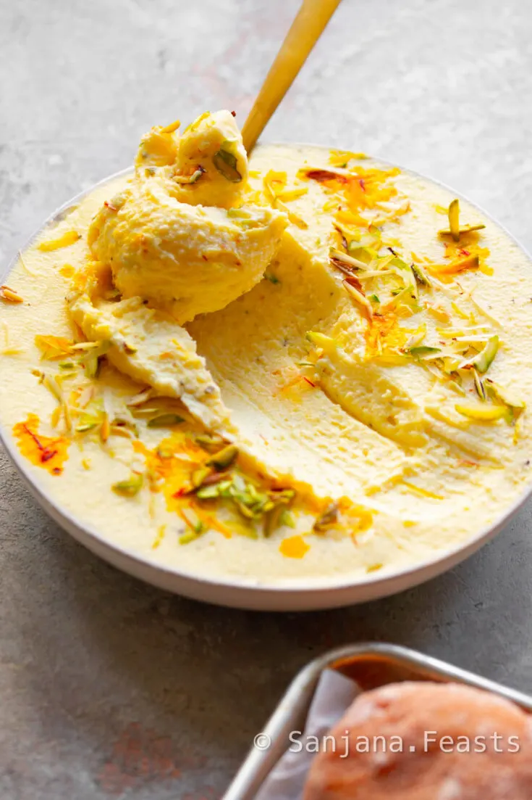
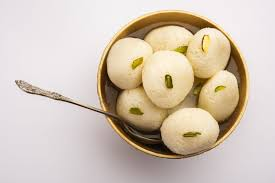
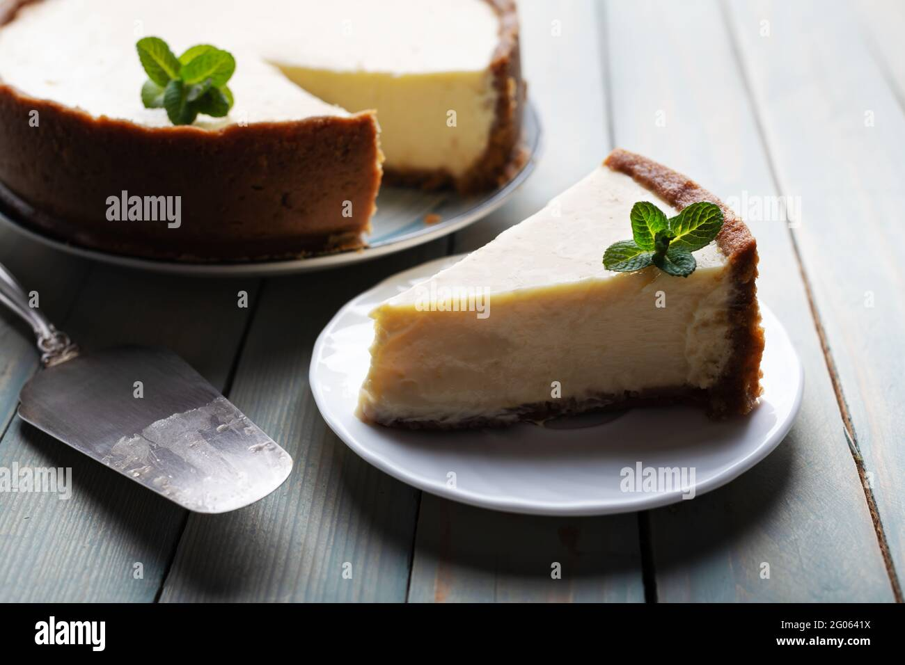
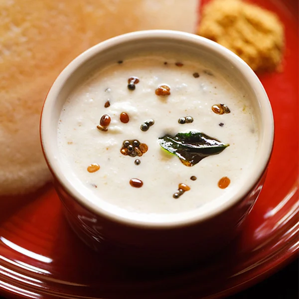

Pasta
Spaghetti Bolognese

A classic Italian dish with rich and flavorful creame sauce served over perfectly cooked spaghetti.
Ingredients: Ground beef, onion, garlic, tomato sauce, Italian seasoning, salt, pepper, spaghetti.
Instructions:
- In a pan, sauté chopped onions and garlic until golden.
- Add ground beef and cook until browned.
- Stir in tomato sauce, Italian seasoning, salt, and pepper. Simmer for 20 minutes.
- Cook spaghetti according to package instructions. Drain and mix with the sauce.
- Serve hot and garnish with grated Parmesan cheese.
White ouce Pasta

A classic Italian dish with rich and flavorful with cream served over perfectly cooked pasta.
Ingredients: Ground beef, onion, garlic, tomato sauce, Italian seasoning, salt, pepper, spaghetti.
Instructions:
- Cook the pasta according to package instructions. Drain and set aside.
- In a pan, melt butter over medium heat.
- Add flour and stir continuously to make a smooth paste.
- Gradually whisk in milk, ensuring no lumps are formed.
- Cook the white sauce until it thickens. Season with salt and pepper.
- Stir in the grated Parmesan cheese until melted and smooth.
- Add the cooked pasta to the sauce, tossing to coat evenly.
- Garnish with fresh parsley and serve hot.
Pizza
Italian Pizza

A classic Margherita pizza with fresh tomatoes, mozzarella, and basil on a thin crispy crust.
Ingredients: Pizza dough, tomato sauce, fresh mozzarella, tomatoes, fresh basil, olive oil, salt.
Instructions:
- Preheat the oven to 475°F (245°C).
- Roll out the pizza dough and spread tomato sauce evenly.
- Place slices of fresh mozzarella and tomato on the dough.
- Bake in the preheated oven for 12-15 minutes or until the crust is golden and the cheese is bubbly.
- Remove from the oven, sprinkle with fresh basil, drizzle with olive oil, and add a pinch of salt.
- Slice and serve!
Margrerita Pizza

A classic Margherita pizza with fresh tomatoes, mozzarella, and basil on a thin crispy crust.
Ingredients: Pizza dough, tomato sauce, fresh mozzarella, tomatoes, fresh basil, olive oil, salt.
Instructions:
- Preheat the oven to 475°F (245°C).
- Roll out the pizza dough and spread tomato sauce evenly.
- Place slices of fresh mozzarella and tomato on the dough.
- Bake in the preheated oven for 12-15 minutes or until the crust is golden and the cheese is bubbly.
- Remove from the oven, sprinkle with fresh basil, drizzle with olive oil, and add a pinch of salt.
- Slice and serve!
Dessert
Shrikhanda
Indulge in the rich and moist goodness of a classic chocolate cake, perfect for any sweet craving.
Ingredients: Flour, sugar, cocoa powder, baking soda, salt, eggs, milk, vegetable oil, vanilla extract.
Instructions:
- Place the hung curd in a mixing bowl.
- Add powdered sugar and mix well until smooth and creamy.
- Add cardamom powder and saffron-infused milk. Mix thoroughly.
- Refrigerate the Shrikhand for a few hours to enhance the flavor.
- Garnish with chopped nuts before serving.
- Serve chilled and enjoy your homemade Shrikhand!
Rasogulla
Indulge in the rich and moist goodness of a classic chocolate cake, perfect for any sweet craving.
Ingredients: Flour, sugar, cocoa powder, baking soda, salt, eggs, milk, vegetable oil, vanilla extract.
Instructions:
- 1 liter milk
- 1/4 cup lemon juice or vinegar
- 1 cup sugar
- 4 cups water
- A pinch of cardamom powder
- Saffron strands (optional)
Cakes
CheesCake
Indulge in the rich and moist goodness of a classic chocolate cake, perfect for any sweet craving.
Ingredients: Flour, sugar, cocoa powder, baking soda, salt, eggs, milk, vegetable oil, vanilla extract.
Instructions:
- Preheat the oven to 325°F (163°C). Grease a 9-inch springform pan.
- In a bowl, mix graham cracker crumbs and melted butter. Press the mixture into the bottom of the prepared pan to form the crust.
- In a large mixing bowl, beat cream cheese until smooth. Add sugar and vanilla extract, and beat until well combined.
- Add eggs one at a time, beating well after each addition.
- Stir in sour cream and flour until just combined.
- Pour the cream cheese mixture over the crust in the springform pan.
- Bake in the preheated oven for 55-60 minutes or until the center is set and the top is lightly browned.
- Remove from the oven and let it cool in the pan for 10 minutes. Run a knife around the edge to loosen, then remove the sides of the springform pan.
- Chill the cheesecake in the refrigerator for at least 4 hours or overnight before serving.
- Slice and enjoy your classic cheesecake!
Vanilla Cake

Indulge in the rich and moist goodness of a classic chocolate cake, perfect for any sweet craving.
Ingredients: Flour, sugar, cocoa powder, baking soda, salt, eggs, milk, vegetable oil, vanilla extract.
Instructions:
- Preheat the oven to 350°F (175°C). Grease and flour two 9-inch round cake pans.
- In a medium bowl, whisk together flour, baking powder, and salt. Set aside.
- In a large mixing bowl, cream together the softened butter and sugar until light and fluffy.
- Add eggs one at a time, beating well after each addition. Stir in the vanilla extract.
- Gradually add the dry ingredients to the wet ingredients, alternating with the milk. Begin and end with the dry ingredients. Mix until just combined.
- Divide the batter evenly between the prepared cake pans and smooth the tops.
- Bake in the preheated oven for 25-30 minutes or until a toothpick inserted into the center comes out clean.
- Allow the cakes to cool in the pans for 10 minutes, then transfer them to a wire rack to cool completely.
- Once cooled, you can frost and decorate the cakes as desired.
Biryani
Chicken Biryani

Indulge in the rich and moist goodness of a classic chocolate cake, perfect for any sweet craving.
Ingredients: Flour, sugar, cocoa powder, baking soda, salt, eggs, milk, vegetable oil, vanilla extract.
Instructions:
- Wash the basmati rice and soak it in water for 30 minutes. Cook the rice until it's 70% done. Drain and set aside.
- In a large pan, heat oil or ghee. Add sliced onions and fry until golden brown. Remove half for garnish.
- Add ginger-garlic paste to the remaining onions in the pan. Sauté until the raw smell disappears.
- Add chicken pieces and cook until they are no longer pink. Add biryani masala, turmeric powder, red chili powder, and salt. Mix well.
- Add chopped tomatoes and cook until they become soft. Add yogurt and cook until the chicken is tender and the oil separates.
- In a separate pot, layer half of the partially cooked rice, followed by the cooked chicken mixture. Top with the remaining rice.
- Sprinkle biryani masala and garnish with the fried onions, fresh coriander, and mint leaves.
- Cover the pot with a tight lid and cook on low heat for 20-25 minutes or until the rice is fully cooked and aromatic.
- Fluff the rice gently, mix the layers, and serve hot.
Chicken Biryani

Indulge in the rich and moist goodness of a classic chocolate cake, perfect for any sweet craving.
Ingredients: Flour, sugar, cocoa powder, baking soda, salt, eggs, milk, vegetable oil, vanilla extract.
Instructions:
- Preheat the oven to 350°F (175°C). Grease and flour a cake pan.
- In a large bowl, mix flour, sugar, cocoa powder, baking soda, and salt.
- Add eggs, milk, vegetable oil, and vanilla extract. Mix until smooth.
- Pour the batter into the prepared pan and bake for 30-35 minutes.
- Allow the cake to cool before frosting or serving.
Chutneys
Coconut chutney
Indulge in the rich and moist goodness of a classic chocolate cake, perfect for any sweet craving.
Ingredients: Flour, sugar, cocoa powder, baking soda, salt, eggs, milk, vegetable oil, vanilla extract.
Instructions:
- In a blender, combine grated coconut, roasted chana dal, green chilies, ginger, tamarind paste, and salt.
- Add a little water and blend into a smooth paste. Adjust the consistency according to your preference.
- Transfer the chutney to a serving bowl.
- For tempering, heat oil in a small pan. Add mustard seeds, urad dal, asafoetida, curry leaves, and dried red chili (if using).
- Once the mustard seeds splutter and urad dal turns golden, pour the tempering over the coconut chutney. Mix well.
- Your delicious coconut chutney is ready to be served with dosa, idli, or any South Indian dish!